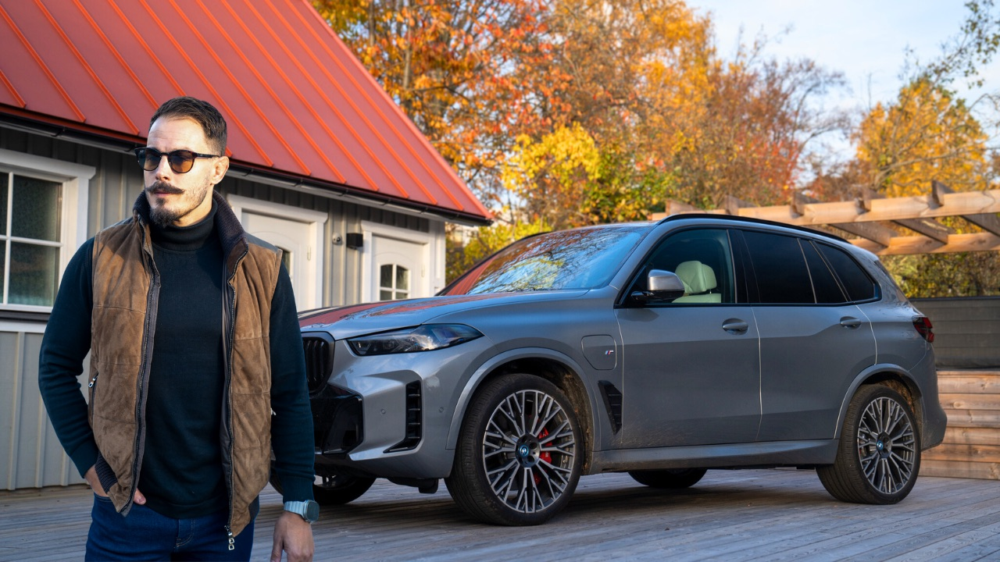
The Gentleman
”Jag är en biltokig fighter med en passion för bilar.”
Simons egna ord · kanalbeskrivningen på YouTube
Testat på kanalen
- BMW M135i
- Lotus Emira Turbo SE
- INEOS Grenadier
- Lynk & Co 08
- BMW X5 M Competition
- BMW iX 60
- BMW M2
- HYMER Yosemite
- BMW E30
01 Varvet
Ett varv. Fyra sektorer.
Allt inom citattecken är Simons egna ord, hämtade från simonskold.com och från hans YouTube-kanal.
-
Sektor 1
Bilar & tester
”Min stora passion i livet är bilar och på min youtube-kanal gör jag både reviews och tester av bilar.”
Källa · simonskold.com
-
Sektor 2
På banan
”I år tävlar jag i BMW 325 cup och 3-timmarsserien på Gelleråsen.”
Källa · kanalbeskrivningen på YouTube (utan årtal)
-
Sektor 3
Träning & MMA
”Träning och bilar är mina största passioner …”
Källa · kanalbeskrivningen på YouTube
-
Sektor 4
Snabbis med kändis
”Du kan även se mitt program Snabbis med kändis där jag träffar olika profiler i intervjuer.”
Källa · simonskold.com
02 Garaget
I garaget.
Bilarna är hämtade från kanalens beskrivning och videotitlar. Simon vet bäst vad som står där i dag, så listan stäms av med honom innan något blir skarpt.
- 01 X5 50e
- 02 944 TURBO S
- 03 M135i
- 04 E30
03 Kanalen
Ett urval från kanalen.
-
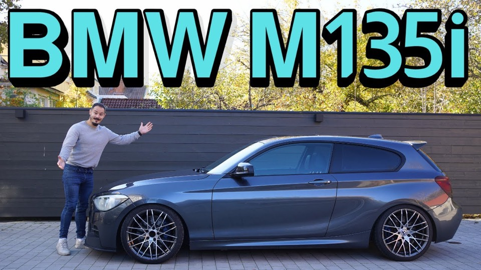
01Projektbil Från vardagsbil till trackdaydröm – nu börjar bygget på min BMW M135i! -
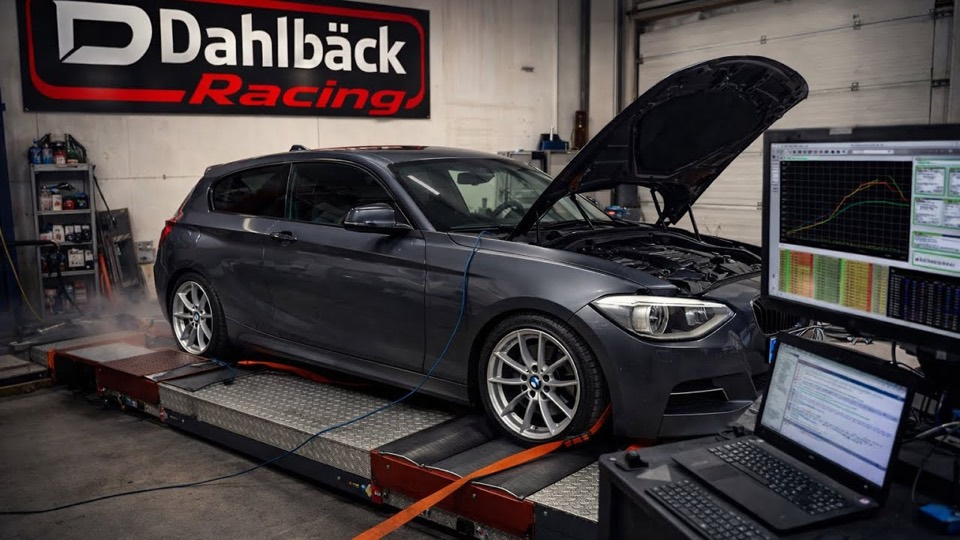
02Projektbil Mappning hos Dahlbäck Racing – Hur mycket effekt får vi? -
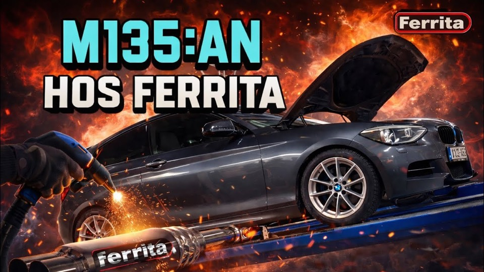
03Projektbil BMW M135i med Ferrita-system – nu låter den som den förtjänar -
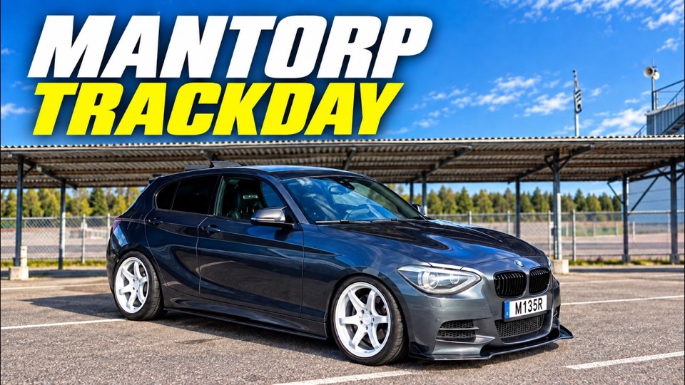
04Bana Mantorp Park BMW M135i – premiär på bana -
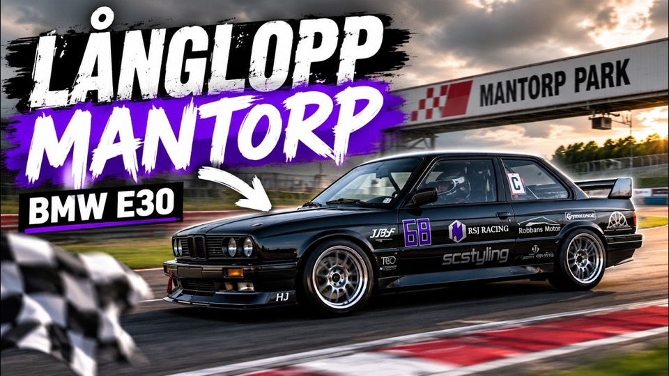
05Bana Mantorp Långlopp – BMW E30 -
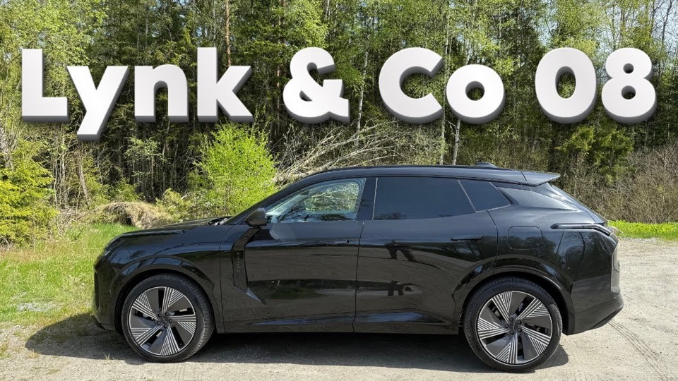
06Test Lynk & Co 08 – Pluginhybrid med 20 mils räckvidd på el - 07Test Testar nya BMW X5 M Competition – brutal SUV med sportbilsprestanda!
-
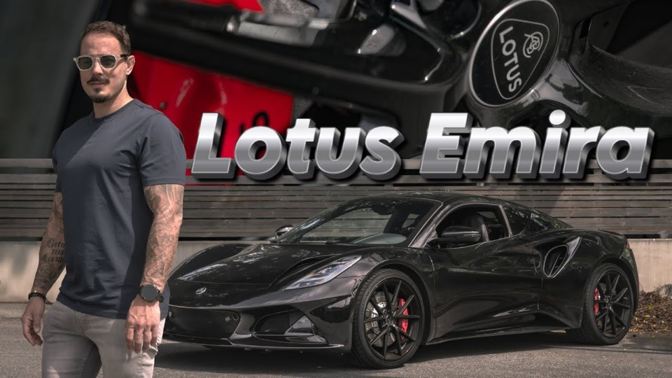
08Test Lotus Emira Turbo SE -
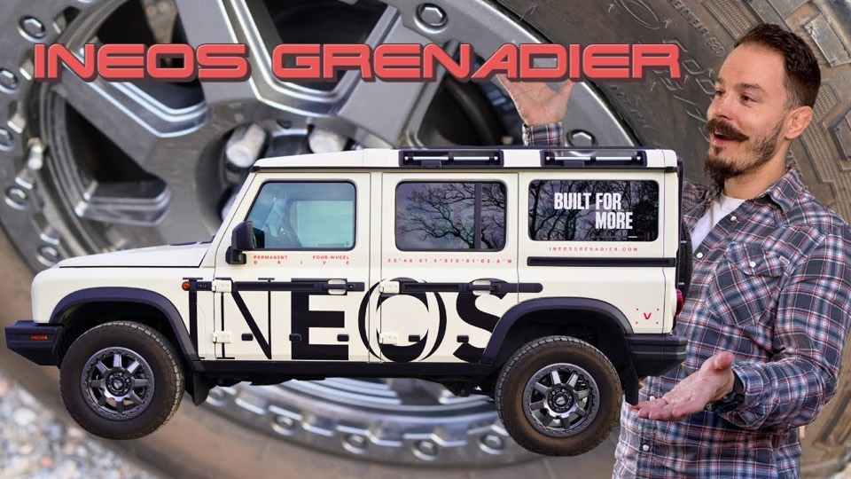
09Test Rå, robust och redo för allt – jag testar INEOS Grenadier. -
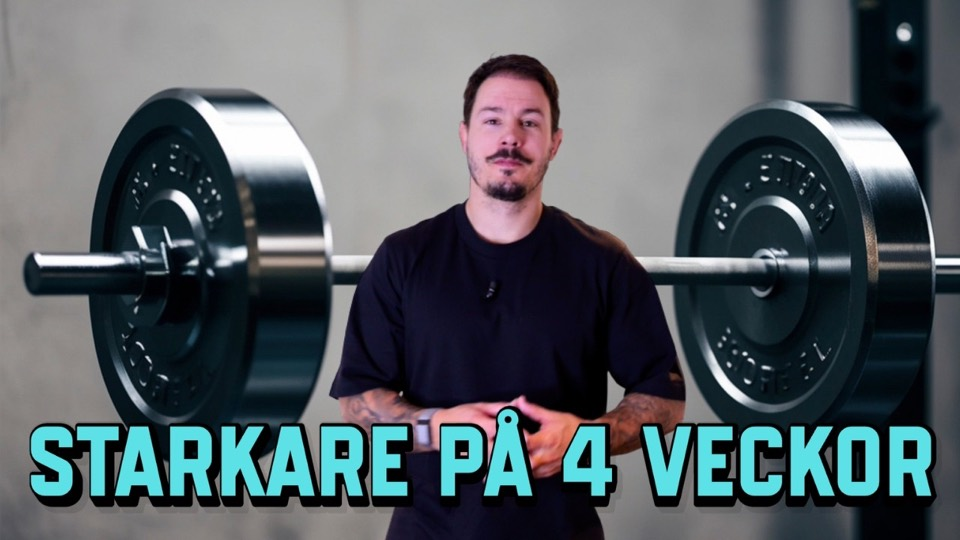
10Träning Hur mycket starkare kan jag bli på 4 veckor? (Sjukt resultat!) -
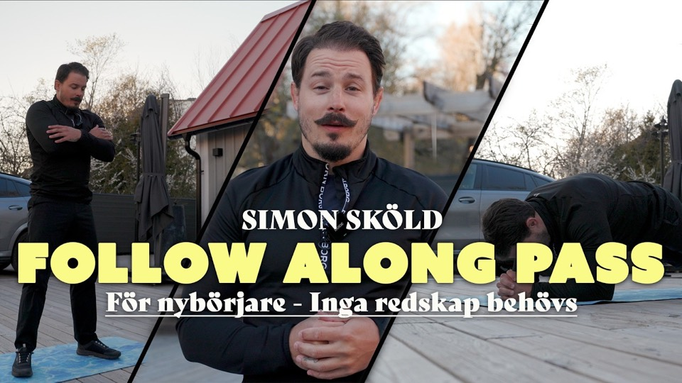
11Träning Effektivt helkroppspass hemma – inga redskap behövs! -
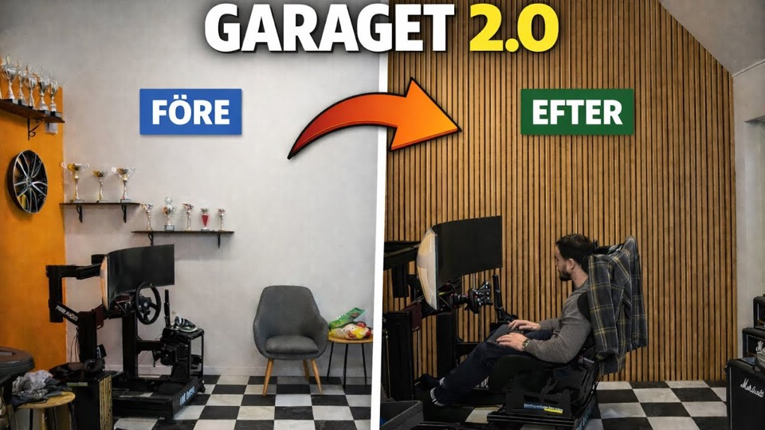
12Garage Jag förvandlade mitt garage – GARAGET 2.0 är här!
04 Träning
Träna med Simon.
Platshållare Den här delen väntar på Simon. Upplägg, priser och bokning finns inte på hans nuvarande sida, så här står ingenting påhittat. Han fyller i rutorna själv.
-
Upplägg 1
Rubrik från Simon
Kort beskrivning av upplägget, med Simons egna ord.
Pris —
-
Upplägg 2
Rubrik från Simon
Kort beskrivning av upplägget, med Simons egna ord.
Pris —
-
Upplägg 3
Rubrik från Simon
Kort beskrivning av upplägget, med Simons egna ord.
Pris —
Det som finns på riktigt redan i dag är träningen på kanalen, i spellistorna Träning, Träning för latmaskar och MMA ↗
05 Kontakt
Häng med.
- YouTube@simonthegentlemanskold↗
- Instagram@simonskold↗
- SamarbetenE-postadress Platshållare